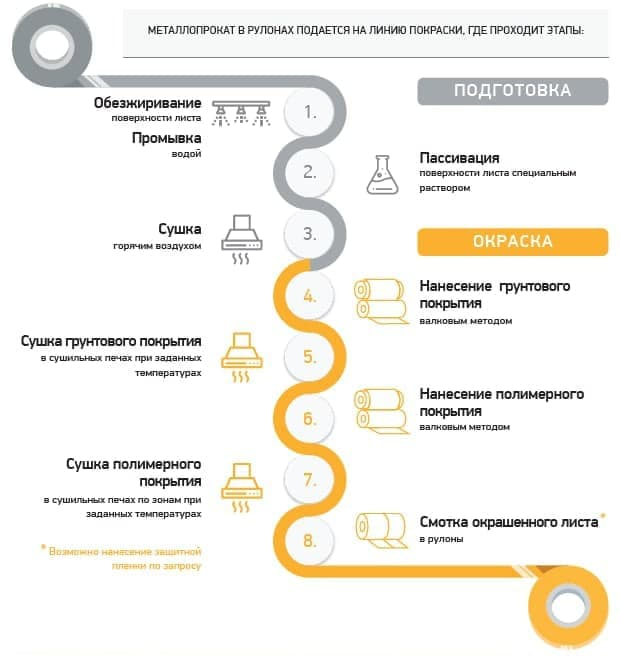

О компании
Компания "Техностиль Колор"
Динамично развивается в сегменте поставок окрашенной
рулонной стали премиального качества и нестандартных
цветов на территории РФ и стран ближнего зарубежья.
Предприятие находится в с. Некрасово, Калужской области
и оснащено современной высокопроизводительной линией
непрерывной покраски рулонной стали по технологии Coil
Coating.
В состав команды предприятия входят специалисты, обладающие опытом работы в данной отрасли
от 5
лет
и
выше.
Менеджмент компании прошел проверку на соответствие
требованиям государственного и международного стандарта ISO.
Высокая степень автоматизации производства и регулярное
внедрение собственных технологических разработок обеспечивают стабильно высокое качество и
повторяемость
цвета продукции, выпускаемой «Техностиль колор премиум».
Все материалы для покраски имеют соответствующие
сертификаты и проходят входной контроль качества.
Покраска металлопроката осуществляется в соответствии с
ГОСТ 34180-2017. Каждая партия окрашенной стали проходит 9-ти ступенчатую
систему
проверки
качества в
собственной лаборатории.
Входящая в состав производственных мощностей линия
продольно-поперечной резки позволяет расширить ассортиментную линейку компании поставками
металла в
листах
и лентах.
Основной принцип работы компании - непрерывное совершенствование продукции и услуг в сотрудничестве с лучшими специалистами отрасли и своими клиентами
Наша специализация
Покраска рулонной стали
премиального качества
и
нестандартных
цветов
Предприятие основано в 2015 году
Мощность
120000 т/год
Производство предприятия
Качество
9 ступеней
Проверки окрашенной стали
Объём
от 1 тонны
Выполнение заказов
Преимущества производства
Широкий диапазон цветов
- По каталогам RAL Classic, RAL Design, RAL Effect, Pantone, RR
- Подбор цвета по образцу
Индивидуальные технические решения
- Разработка по запросу
Срок поставки нествндартных цветов
- От 5-ти рабочих дней
Технология покраски
Производство окрашенной стали - сложный
технологический
процесс, основанный на четком контроле
качества каждого этапа: от поставки сырья до упаковки и отгрузки готовой продукции
Характеристика металлопроката
| Варианты подкаты | Холоднокатанная, оцинкованная, нержавеющая сталь |
| Толщина листа | 0,25-0,85 мм |
| Ширина листа | 600-1295 мм |
| Внутренний диаметр рулонов | 508-610мм |
| Вес рулонов | до 10 т |
Структура металлического листа с полимерным покрытием

Процесс производства

Контроль качества
Готовой продукции
Все оборудование
лаборатории
сертифицировано.
Каждая партия
окрашенной стали
проходит 9-ти ступенатую
проверку качества по
показателям:
01
Определение
адгезии
методом решетчатых
надрезов
02
Определение
стойкости
методом обратного удара
03
Определение
прочности
при растяжении по Эриксену
04
Измерение
прочности
при T-изгибе
05
Определение
твёрдости
по карандашу
06
Измерение цветового
различия
с помощью спектофотометра
07
Проверка
блеска
с помощью блескометра
08
Испытание
на стойкость
к истиранию (МЭК)
09
Измерение
толщины
лакокрасочного покрытия
методом разрушающего
контроля